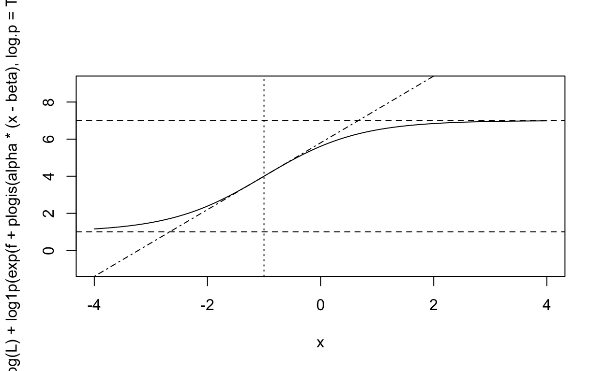

I want to fit a four parameter equation like this:
\[ Y = \left( L + \frac{U - L}{1 + e^{-\alpha(x - \beta)}} \right) \] Let’s plot this curve to see what it means
L <- 3
U <- 7
alpha <- 1.2
beta <- -1
curve(L + (U-L)/(1 + exp(-alpha*(x - beta))), xlim = c(-4, 4), ylim = c(L-2, U+2))
abline(h = c(L, U), lty = 2)
abline(v = beta, lty = 3)
curve(alpha*(x - beta) + (U-L)/2 + L, add = TRUE, lty = 4)

Figure 1: Four parameter logistic equation. dotted lines show the
So we can kind of see what the parameters do based on this:
- L is the lower asymptote
- U is the upper asymptote
- beta is the position of the inflection point
- alpha is the slope at the inflection point.
If we want to estimate these parameters, it is very helpful to work on a either the logit or exponential scale.
i also want to manipulate the expression in order to maximize numerical stability by using Stan’s built-in functions.
This is a veriation of the log-sum-exp trick, which
We can assume that \(U > L\), which means there’s a number greater than 1 which multiplies \(L\) to give you \(U\)
\[ \begin{align} U &> L \\ U &= Lc \\ Lc &> L \\ c &> 1 \\ c - 1 &> 0 \end{align} \] If \(c - 1\) is a number greater than 0, then it is just as easy to say something like \(e^f\), because that is always a positive number:
\[ \begin{align} e^f &= c - 1 \\ 1 + e^f &= c \end{align} \] So the thing above becomes
\[ U = L(1 + e^f) \] Let’s go back to the main expression and substitute this in:
$$ \[\begin{align} Y &= \left( L + \frac{U - L}{1 + e^{-\alpha(x - \beta)}} \right) \\ &= \left( L + \frac{L(1 + e^f) - L}{1 + e^{-\alpha(x - \beta)}} \right) \\ &= L\left( 1 + \frac{1 + e^f - 1}{1 + e^{-\alpha(x - \beta)}} \right) \\ &= L\left(1 + \frac{e^f}{1 +e^{-\alpha(x - \beta)}}\right) \end{align}\] $$
Now for a host of reasons we might want to work on a log scale, so we log both sides of this equation:
\[ \begin{align} \ln(Y) &= \ln\left(L\left(1 + \frac{e^f}{1 +e^{-\alpha(x - \beta)}}\right)\right) \\ &=\ln(L) + \ln\left(1 + \frac{e^f}{1 +e^{-\alpha(x - \beta)}}\right) \\ \end{align} \]
Now let’s look at the fraction in the brackets, and try taking the log of this! why will become clear in just a moment:
\[ \begin{align} &\frac{e^f}{1 +e^{-\alpha(x - \beta)}} \\ &\ln\left(\frac{e^f}{1 +e^{-\alpha(x - \beta)}}\right) \\ &\ln(e^f) + \ln\left(\frac{1}{1 +e^{-\alpha(x - \beta)}}\right)\\ &f + \ln\left(\frac{1}{1 +e^{-\alpha(x - \beta)}}\right) \end{align} \] Now let’s talk about Stan’s composed functions. There’s two we can use here:
\[ \text{log1p_exp}(x) = \ln(1 + e^x) \] and
\[ \text{log_inv_logit}(x) = \ln\left(\frac{1}{1 + e^{-x}}\right) \]
We can rewrite the expression above using the
log_inv_logit function:
\[ f + \text{log_inv_logit}(\alpha(x - \beta)) \]
Notice that I ditched the negative sign, since that is part of the inverse logit function
We can put that back into the whole function:
\[ \begin{align} \ln(Y) &= \ln\left(L\left(1 + \frac{e^f}{1 +e^{-\alpha(x - \beta)}}\right)\right) \\ &=\ln(L) + \ln(1 + \frac{e^f}{1 +e^{-\alpha(x - \beta)}}) \\ &=\ln(L) + \ln(1 + e^{f + \text{log_inv_logit}(\alpha(x - \beta))}) \\ &=\ln(L) + \text{log1p_exp}(f + \text{log_inv_logit}(\alpha(x - \beta))) \end{align} \]
In the last line, all I did way replace the expression \(\ln(1 + e^x)\) with the name of the Stan function that performs that operation.
As a last tweak, let’s write \(m = \ln(L)\)
\[ \ln(Y) = m + \text{log1p_exp}(f + \text{log_inv_logit}(\alpha(x - \beta))) \]
After all this mathematical manipulation, we have rewritten the 4 parameter logistic with new parameters:
- \(m\) the log of the minimum, or lower asymptote. can be any real number.
- \(f\) part of the factor that converts from \(L\) to \(U\). can be any real number. if \(f = 0\), then \(U = 2L\). If \(f<0\) then \(L>U/2\)
- \(\alpha\) is still the slope at the inflection point, on the logit scale
- \(\beta\) is the position of the inflection point, in units of \(x\)
Note that all this only makes sense if L>0 – but if that were not true, you would not be able to (or want to) calculate \(\ln(Y)\) anyways
We can recalculate \(U\) in the generated quantities block by doing:
\[ U = e^m(1 + e^f) \] let’s try to rewrite this in R to confirm the algebra
First of all, recall that inv_logit exists in R as
plogis, and you can ask for the calculation on the log
scale:
and also that there is a builtin R function called
log1p
putting them all together, here is a curve with the new parameterization:
L <- 1
U <- 7
f <- log(U/L - 1)
alpha <- 1.2
beta <- -1
curve(exp(log(L) + log1p(exp(f + plogis(alpha*(x - beta), log.p = TRUE)))), xlim = c(-4, 4), ylim = c(L-2, U+2))
abline(h = c(L, U), lty = 2)
abline(v = beta, lty = 3)
curve((alpha * (U-L)/4)*(x - beta) + (U-L)/2 + L, add = TRUE, lty = 4)

the function works out the same!
Andrew.. just why
I feel like this parameterization acheives some useful goals.
First, by positioning two parameters on the real line, now it should be much easier to add random effects
It is now impossible to generate “wrong” curves – e.g. curves where the maximum is below the minimum, ie where \(U<L\)
priors should be straightforward to set, though of course their meaning has changed.
by rearranging the equation to use composed functions, we have (I hope!) set ourselves up for success regarding the speed and stability of sampling
Because the function is on the log scale, it will be useful when
working with distributions parameterized on the log scale– for example
poisson_log or a hommade lognormal likelihood.
another way to write it
Note it would also be nice to parameterize this expression by \(h\), the growth rate at the inflection point:
\[ \begin{align} L + \frac{U - L}{2} &= h \\ L\left(1 + \frac{c - 1}{2}\right) &= h \\ L\left(1 + \frac{e^f}{2}\right) &= h \\ L\left(1 + e^{\ln(.5) + f}\right) &= h \\ \ln(L) = \ln(h) - \text{log1p_exp}(f + \ln(.5)) \end{align} \]
This could be useful if it makes more sense to set a prior on a midpoint, rather than on a lower bound.
Trying it out
knitr::opts_chunk$set(eval = FALSE)
library(ggplot2)
L <- 3
U <- 16
f <- log(U/L - 1)
alpha <- 1.2
beta <- -1
x <- runif(420, -2, 5)
meanlog <- log(L) + log1p(exp(f + plogis(alpha*(x - beta), log.p = TRUE)))
qplot(x, meanlog, geom = "line")
sdlog <- .7
y_obs <- rlnorm(420, ln_a(meanlog, sdlog), ln_b(meanlog, sdlog))
data.frame(x, mean = exp(meanlog)) |>
ggplot(aes(x = x, y = mean))+ geom_line() +
geom_point(aes(y = y_obs)) +
geom_hline(yintercept = c(L, U), lty = 2)+
geom_vline(xintercept = beta, lty = 3) +
theme_minimal()
library(tidybayes)
model_draws <- gather_draws(model_samples, log_mu[i], ndraws = 45)
model_draws |>
ungroup() |>
mutate(x = datlist$x[i]) |>
ggplot(aes(x = x, y = exp(.value), group = .draw)) +
geom_line() + NULL
geom_point(aes(x = x, y = yy), inherit.aes = FALSE,
data = as.data.frame(datlist))
model_mean <- gather_rvars(model_samples, log_mu[i])
model_mean |>
ungroup() |>
mutate(x = datlist$x[i]) |>
ggplot(aes(x = x, dist = exp(.value))) +
stat_dist_lineribbon() +
geom_point(aes(x = x, y = y_obs), inherit.aes = FALSE,
data = as.data.frame(datlist))
Using matrix algebra instead
library(cmdstanr)
pl_compfun_mat <- cmdstan_model(stan_file = here::here("_posts/2022-07-22-one-weird-trick-the-4-parameter-logistic/4pl_compfun_mat.stan"))
datlist <- list(N = length(x),
x = cbind(1,x),
y_obs = y_obs
)
model_samples <- pl_compfun_mat$sample(data = datlist, parallel_chains = 4, refresh=0)
model_samples
avoiding log_inv_logit and instead using
-log1p_exp()
library(cmdstanr)
pl_compfun_noinv <- cmdstan_model(stan_file = here::here("_posts/2022-07-22-one-weird-trick-the-4-parameter-logistic/4pl_compfun_noinvlogit.stan"))
datlist <- list(N = length(x),
x = cbind(1,x),
y_obs = y_obs
)
model_samples <- pl_compfun_mat$sample(data = datlist, parallel_chains = 4, refresh=0)
model_samples
knitr::opts_chunk$set(eval = TRUE)
get simpler
I’m not satisfied with how these are working, so here is two simplifications of the above
- simulating the data from the prior and fitting a model using the same prior
- switching to
poisson_logto save the parameter that I’m not interested in right now
Also, just to write in math what I was expressing in Stan above
\[ \begin{align} \text{log_inv_logit}(x) &= \ln\left(\frac{1}{1 + e^{-\alpha}}\right) \\ &= -1 \times \ln(1 + e^{-\alpha}) \\ &= -\text{log1p_exp}(-\alpha) \end{align} \]
so the expression for the log of the mean becomes:
\[ \begin{align} \ln(Y) &= m + \text{log1p_exp}(f + \text{log_inv_logit}(\alpha(x - \beta))) \\ &= m + \text{log1p_exp}(f - \text{log1p_exp}(-\alpha(x - \beta))) \\ \end{align} \]
Simulate this in R
simulate data with this
And fit with a Stan program that uses these same priors:
library(cmdstanr)
pl_poissonlog <- cmdstan_model(stan_file = here::here("_posts/2022-07-22-one-weird-trick-the-4-parameter-logistic/4pl_poissonlog.stan"))
datlist <- list(N = length(x_vals),
x_vals = x_vals,
y_count = y_count
)
model_samples <- pl_poissonlog$sample(data = datlist, parallel_chains = 4)
model_samples
Now I want to look at the parameters and also see the curve:
library(tidyverse)
plot_model_curve <- function(model_samples, datlist){
model_mean <- gather_rvars(model_samples, log_mu[i])
model_mean |>
ungroup() |>
mutate(x = datlist$x_vals[i]) |>
ggplot(aes(x = x, dist = exp(.value))) +
stat_dist_lineribbon() +
geom_point(aes(x = x_vals, y = y_count), inherit.aes = FALSE,
data = as.data.frame(datlist))
}
plot_model_curve(model_samples = model_samples, datlist = datlist)
parameter recovery
get_variables(model_samples)
gather_rvars(model_samples, m, f, log_alpha) |>
ggplot(aes(dist = .value)) +
stat_dist_halfeye() +
facet_wrap(~.variable) +
geom_hline(aes(yintercept = trueval),
data = tribble(
~.variable, ~trueval,
"f", f,
"m", m,
"log_alpha",a
))
How does this compare to just writing the 4PL model directly? Keep
the same parameters but just swap the log1p_exp part for
writing that in readable math.
simple but with lognormal errors
OK so the poisson_log version works as intended. Does a lognormal have the same ease?
library(cmdstanr)
pl_lognormalfixvar <- cmdstan_model(stan_file = here::here("_posts/2022-07-22-one-weird-trick-the-4-parameter-logistic/4pl_lognormalfixvar.stan"))
datlist <- list(N = length(x_vals),
x_vals = x_vals,
y_meas = y_meas
)
model_samples_ln <- pl_lognormalfixvar$sample(data = datlist, parallel_chains = 4)
model_samples_ln
model_mean <- gather_rvars(model_samples_ln, post_log_mu[i])
dd <- model_mean |>
ungroup() |>
mutate(x = datlist$x_vals[i])
dd |>
filter(i == 8) |>
ggplot(aes(x = x, dist = exp(.value))) +
stat_dist_halfeye()
model_mean |>
ungroup() |>
mutate(x = datlist$x_vals[i]) |>
ggplot(aes(x = x, dist = exp(.value))) +
stat_dist_lineribbon() +
geom_point(aes(x = x_vals, y = y_count), inherit.aes = FALSE,
data = as.data.frame(datlist))
gather_rvars(model_samples_ln, m, f, log_alpha) |>
ggplot(aes(dist = .value)) +
stat_dist_halfeye() +
facet_wrap(~.variable) +
geom_hline(aes(yintercept = trueval),
data = tribble(
~.variable, ~trueval,
"f", f,
"m", m,
"log_alpha",a
))
different species have different parameters:
sp_m <- rnorm(12, log(5), sd = .1)
sp_f <- rnorm(12, log(10), sd = .1)
sp_a <- rnorm(12, 0, 1)
sp_b <- 0
sp_curves <- expand_grid(x_vals = runif(50, -6, 12),
sp = 1:12) |>
mutate(y_mean = sp_m[sp] + log1p(exp(sp_f[sp] - log1p(exp(-exp(sp_a[sp])*(x_vals - b))))),
y_meas = rlnorm(length(x_vals), ln_a(y_mean, .5), ln_b(y_mean, .5))
)
sp_curves |>
ggplot(aes(x = x_vals, y = exp(y_mean), group = sp)) +
geom_line() +
geom_point(aes(y = y_meas))
thisnk of L, or m, the minimum , as something that is going to vary by species AND by site. L isnt really L per se, its the means of shifting hte whole function up or down.
f is t;he factore by which U is bigge than L. fixed by a species. could think of it as a specie’s shade tolerance
alpha is the species stage descrimination
library(cmdstanr)
multispp <- cmdstan_model(stan_file = here::here("_posts/2022-07-22-one-weird-trick-the-4-parameter-logistic/multisp_logistic_curve.stan"), pedantic = TRUE)
datlist <- list(N = nrow(sp_curves),
S = max(sp_curves$sp),
sp = sp_curves$sp,
x_vals = sp_curves$x_vals,
y_meas = sp_curves$y_meas
)
model_samples_ln <- multispp$sample(data = datlist,
parallel_chains = 4,
iter_sampling = 500)
model_samples_ln
library(tidybayes)
model_mean <- gather_rvars(model_samples_ln, post_log_mu[i])
dd <- model_mean |>
ungroup() |>
mutate(x = datlist$x_vals[i])
dd |>
filter(i == 8) |>
ggplot(aes(x = x, dist = exp(.value))) +
stat_dist_halfeye()
model_mean |>
ungroup() |>
mutate(x = datlist$x_vals[i],
sp = datlist$sp) |>
ggplot(aes(x = x, dist = exp(.value), group = sp)) +
stat_dist_lineribbon() +
geom_point(aes(x = x_vals, y = y_meas), inherit.aes = FALSE,
data = sp_curves)
try via diag post multiply
library(cmdstanr)
multispp_diag <- cmdstan_model(stan_file = here::here("_posts/2022-07-22-one-weird-trick-the-4-parameter-logistic/multisp_diag_pre.stan"), pedantic = TRUE)
datlist <- list(N = nrow(sp_curves),
S = max(sp_curves$sp),
sp = sp_curves$sp,
x_vals = sp_curves$x_vals,
y_meas = sp_curves$y_meas
)
model_samples_ln <- multispp_diag$sample(data = datlist,
parallel_chains = 4,
iter_sampling = 500, iter_warmup = 500,
output_dir = "_posts/2022-07-22-one-weird-trick-the-4-parameter-logistic/")
model_samples_ln$profiles()
that doesn’t sample NOTICABLY faster but the divergences are far fewer.
model_samples_ln <- model_samples_ln$save_output_files("_posts/2022-07-22-one-weird-trick-the-4-parameter-logistic/")